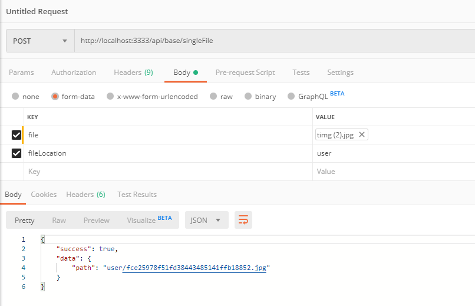

原文连接:https://www.cnblogs.com/tylerdonet/p/12021663.html
书接上回，讲到“使用同一个新增弹框”中有未解决的问题，比如复杂的字段，文件，图片上传，这一篇就解决文件上传的问题。这里的场景是在新增弹出框中要上传一个图片，并且这个上传组件放在一个Form中，和其他文本字段一起提交给接口。
这里就有几个要注意的问题：
- 图片上传时最好能在前端指定图片类型，根据这个类型上传到指定的目录。比如这里是新增用户，上传用户图片，那么这里就指定类型是“user”，那么就把这个文件上传到服务器的upload/user目录中。这样方便后期维护，比如要把项目中的文件统一迁移到另外一个服务器，只要把upload目录复制出来就好了。
- 上传组件是通用的，上传完之后回传给前端一个路径信息，由于使用的是and design中的Form，这时要把这个路径赛到form的数据中一并提交给新增接口。
1.后端上传文件接口
1.1 使用multer
前面在写新增数据，请求数据的时候使用的到中间件bodyParser，解析客户端请求的时候，使用的json类型接受数据，这个很方便，但是上传文件的时候是一般是multipart/form-data这种类型，bodyParser不能解析这种类型。于是这里引入另外一种中间件multer。multer专门处理multipart/form-data类型的表单数据，专业的。
multer有两种使用方式，如果只是一般的网页应用，直接指定dest，也就是上传路径就可以了。如果上传时进行更多的控制，可以使用storage选项。这里我从简单的入手，直接指定文件路径上传一个文件。
// 指定文件上传路径
var upload = multer({dest: path.join(__dirname, './../public/upload/tmp')}); 这里使用到node.js中的path模块，将./../public/upload/tmp这个相对路径转换成计算机本地路径，注意这里我们在express项目的public目录下新建了upload/tmp目录，至于为啥是tmp这样的临时文件夹，请继续往下看。
接着定义上传接口：
router.post('/singleFile', upload.single('file'), function (req, res, next) {
}) 这里我们定义了一个api/base/singleFile接口，接受Form中一个名叫file的上传文件标签，这样定义之后就可以吧文件上传到public/upload/tmp目录下。
1.2 指定上传目录
multer这种指定路径上传的方式是一开始就指定好了，后面都上传到这个目录，就是说这个目录不能是一个变量，那如何能够根据前端传过来的参数将图片上传到指定的目录呢？我这里首先想到的就是“剪切”文件。既然用的是node.js，文件操作的api就少不了剪切文件了。还有官方文档上说明了，回调函数中除了文件之外，还可以有req.body，如果有文本域数据，将在这个req.body中，这个和bodyParser是类似的。
app.post('/profile', upload.single('avatar'), function (req, res, next) {
// req.file 是 `avatar` 文件的信息
// req.body 将具有文本域数据，如果存在的话
}) 有了req.file，req.body这两个对象之后剩下的工作就交给node.js了，代码如下：
// 文件上传
router.post('/singleFile', upload.single('file'), function (req, res, next) {
if(req.body.fileLocation) {
const newName = req.file.path.replace(/\\tmp/, '\\' + req.body.fileLocation) + path.parse(req.file.originalname).ext
fs.rename(req.file.path, newName, err => {
if (err) {
res.json(result.createResult(false, { message: err.message }))
} else {
let fileName = newName.split('\\').pop()
res.json(result.createResult(true, { path: `${req.body.fileLocation}/${fileName}` }))
}
})
} else {
res.json(result.createResult(false, {message: '未指定文件路径'}))
}
})注意在这里还使用了fs模块的rename方法，这个方法可以将文件重命名并修改文件路径，就是剪切文件了。这里用replace方法把tmp目录替换成前端传过来的fileLocalhost，然后将文件移动到这个fileLocation目录中。下面使用postman来debug跟踪一下执行过程：
postman请求：
上传到tmp目录：

移动到指定的user目录：
postman返回：

至此，接口就写好了，下面就是在前端调用这个接口。
2. 前端Form里调用接口
2.1 定义字段类型
在上一篇node.js+react全栈实践-开篇中，使用的是统一的数据添加组件来添加，数据。columns.js中未指定字段类型，都是文本框，这显然不切合实际，在这里再加上一个属性type:file表示在添加数据组件中，这个字段对应一个上传文件组件。另外，如果对文件类型，大小有限制，这里也可以添加accept，size字段。代码如下：
const thumb = { title: '头像', dataIndex: 'thumb', key: 'thumb', render: src => <img className={style.tableImg} alt='' src={ `${config.baseUrl.resource.upload}${src}` }/>, type: 'file', accept: 'image/gif,image/jpeg', size: 2 } 2.2 Upload上传组件
剩下的就要研究一下ant design中的Upload组件，看一下文档就明白了。关键代码如下：
{field.map((f, index) => {
switch (f.type) {
case 'file':
return <FormItem
name='file'
headers={headers}
key={f.key}
label={f.title}>
{getFieldDecorator(f.key)(<div>
<Upload
name="file"
accept={f.accept}
data={data}
listType="picture-card"
showUploadList={false}
action="http://localhost:3332/api/base/singleFile"
beforeUpload={this.beforeFileUpload.bind(this, f)}
onChange={this.handleFileChange.bind(this, f)}>
{imageURL ? <img src={imageURL} alt="avatar" style={{ width: '100%' }} /> : uploadButton}
</Upload>
</div>)}
</FormItem>
default:
return <FormItem key={f.key} label={f.title}>
{getFieldDecorator(f.key, { rules: [{ validator: this.customerValidator.bind(this, f) }] })(<Input placeholder={'请输入' + f.title}/>)}
</FormItem>
}
})} name：这个是字段名字，如果是要调用api/base/singleFile这个接口，就要设置为file，和上面的upload.single('file')是对应起来的
accept：接受的文件类型，从columns.js中thumb字段中获取，也可以在beforUpload回调中验证类型
data：这个就是除了文件之外额外的参数，可以指定为{fileLocation: 'user'}表示要上传到user子目录，这里要赞美一下ant design，已经考虑了额外参数
listType：显示样式，参考antd design文档，不解释
showUploadList：同上，不解释
action：上传文件接口，注意这里要使用本地api文件中定义的接口，不能使用服务端的接口路径，否则会代理失败的
beforUpload：上传文件之前的钩子，这里要赞美一下ant design，可以额外传一个参数f，带入字段信息，这样就可以获取字段的accept，size信息，进行验证
onChange：文件状态改变时的钩子，继续赞美一下ant design，同上，可以额外传递一个参数
这里有一个小疑问：antd design中解释onChange：“上传中、完成、失败都会调用这个函数”，我测试了一下，确实会调用三次，但是有两次都返回了response，status都是done，和我想象的不一样。这上传成功了，按说有上传中，完成个回调，那都是done是怎么回事，“完成”调用了两次？
onChang回调：
到这里，接口已调通，文件已经能够成功的从前端传到后端了。
2.3 Form获取文件路径
最后一个问题，这里使用Form组件填充，收集数据，Form中上传组件是单独的跑起来的，最后得到的是一个url，不是文件本身，如何将这个url给到form中呢？这里使用的是form.setFieldsValue({name: value})这个方法，简答粗暴。代码如下：
handleFileChange(field, info) {
let file = info.file
if (file.response && file.response.success && file.response.data && file.response.data.path) {
let { upload } = this.state
upload.imageURL = `${config.baseUrl.resource.upload}${file.response.data.path}`
// 为Form对应的字段设置值
this.props.form.setFieldsValue({ [`${field.key}`]: file.response.data.path })
this.setState({ upload })
upload.loading = false
}
} 注意这里FormItem是动态加载出来的，并不知道是那个字段，所以onChange回调中额外传递了参数f，这样，setFildsValue中就知道这是要设置Form中哪一个数据。
最后看一下效果：
上传文件：
数据表：
未解决的问题：
1.上传过程中如果因为其他问题导致失败，并且是在转移之前失败，服务器上upload/tmp目录会有很多的垃圾文件，这里可以在转移之后把tmp目录中的文件全部删掉
2.文件的校验是放在beforUpdate钩子里通过全局提示message.error弹出，这个是不是可以放在getFieldDecorator的rules里面，体验会更好